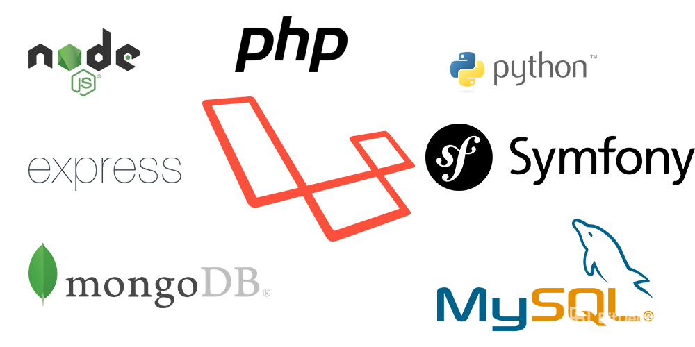
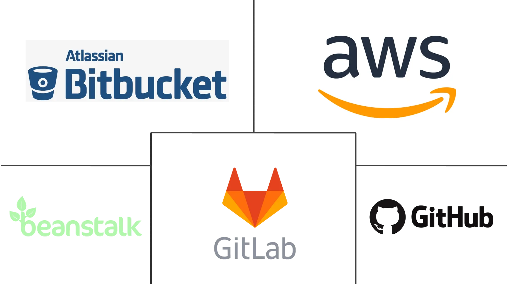

Las tecnologías del desarrollo Full-Stack: Lo que debes saber
El atractivo del desarrollo Full Stack radica en su enfoque holístico, que abarca tanto el frontend como el backend, proporcionando una comprensión completa del desarrollo web. Esta disciplina requiere una versatilidad única, permitiendo a los desarrolladores navegar por un vasto espectro de tecnologías y herramientas. A continuación, exploramos los distintos aspectos del desarrollo Full Stack, destacando las tecnologías involucradas y cómo se entrelazan para crear aplicaciones web modernas y eficientes.
Frontend: La Interfaz de Usuario
El frontend es la parte de la aplicación web con la que los usuarios interactúan directamente. Se centra en mejorar la experiencia del usuario a través de una interfaz visualmente atractiva y funcionalmente intuitiva. Las tecnologías fundamentales en el desarrollo frontend incluyen HTML, CSS y JavaScript, cada una aportando elementos esenciales para la creación de páginas web:
- HTML proporciona la estructura básica, permitiendo a los desarrolladores definir el contenido y la organización de la página web.
- CSS se encarga del diseño y estilo, ofreciendo la capacidad de personalizar la apariencia para una experiencia de usuario atractiva y coherente.
- JavaScript introduce interactividad, haciendo que las páginas web sean dinámicas y capaces de responder a las acciones del usuario.

Backend: La Lógica Detrás de la Escena
El backend es el motor oculto que potencia la aplicación web, encargándose de la lógica de negocio, el procesamiento de datos y las interacciones con la base de datos. Es responsable de manejar las solicitudes del usuario, ejecutar la lógica de aplicación adecuada y enviar los datos correctos de vuelta al frontend. Las tecnologías clave en el desarrollo backend incluyen:
- Lenguajes de programación como Python, Ruby, PHP, Java y JavaScript (a través de Node.js), cada uno con sus propios frameworks y ecosistemas, como Django para Python o Express para Node.js.
- Bases de datos como MySQL, PostgreSQL para sistemas de gestión de bases de datos relacionales, o MongoDB para opciones NoSQL, que almacenan y gestionan los datos de la aplicación.

Desarrollo Full Stack: La Integración
El verdadero arte del desarrollo Full Stack reside en la capacidad de integrar de manera fluida el frontend y el backend. Esto implica no solo dominar las tecnologías individuales sino también comprender cómo interactúan entre sí. Por ejemplo, cómo los datos son solicitados por el frontend a través de una API, procesados en el backend y luego enviados de vuelta para ser presentados al usuario.
Herramientas y Prácticas
El desarrollo Full Stack también implica familiarizarse con un conjunto de herramientas y prácticas que abarcan ambos lados del espectro. Esto incluye:
- Control de versiones con Git, para manejar cambios en el código fuente y colaborar eficientemente en equipos.
- DevOps y automatización de pruebas, que facilitan la integración y entrega continuas.
- Contenedores como Docker, que proporcionan un entorno consistente para el desarrollo, testing y producción.
